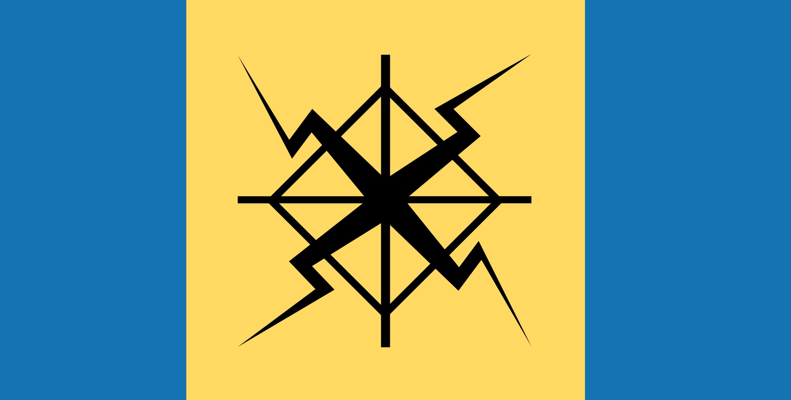

What exactly is Terluzva?
The Terluzvan union is futurist micronation focused in create more things has sovereignty over the "Shag rocks" in the Atlantic Ocean due here was an ancient island named Cishayed, a large islandnear the current Falklands.
What are the goals of this micronation

The Terluzvan micronation is an collective vision based in develop a utopic society wich don't search independence, where every person is capable to do more and more things, things that requis high capacity according a "new philosophic theory" (in-development).
Who is the leader?
There are many governments structures, but the micronation have the "non-obligatory" Teo-technocratic government with monarchist tendencies.
The leader obviosly is the main author, the founder
The leadership is own by a "Duyd" (illuminated person) that means the group is governed by a monarch new god's chosen, the monarch has absolute power.